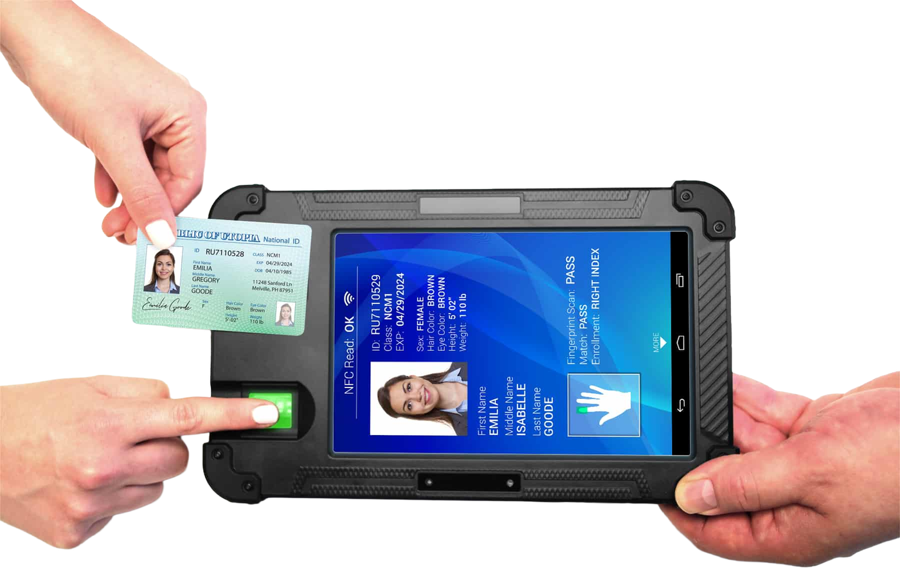
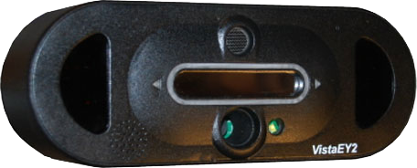
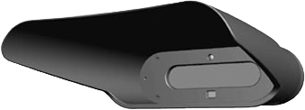

Iriscan becomes the official reseller of CardLogix
Iriscan and CardLogix Corporation, a US maker of smart cards and biometric enrolment devices, have signed a reseller agreement. We now supply CardLogix hardware in Eastern Europe and integrate it with iris and face recognition software.
The range we supply:
BIOSID™ Biometric Mobile Enrollment and Verification Tablet Device

CardLogix' BIOSID™ Biometric Mobile Identity Enrollment and Verification Tablet Solution is a family of rugged, IP65-rated handheld FBI certified devices. It captures fingerprint, iris, face and signature, and reads and writes smart cards or a cloud database. There are three editions: BIOSID Enroll & Verify, the flagship, with enrolment and verification software; BIOSID Verify, for verification only; and the bare BIOSID tablet without software.
Vista FA2/Vista EY2/Vista EY2P Iris and Face Cameras

The Vista FA2, EY2 and EY2P combine an iris scanner and face camera capable of simultaneous iris acquisition and capture from subjects wearing eyewear. The iris camera features multi wavelength infra-red illumination, intelligent distance sensing technology, and multiple operational feedback features to enhance image quality and increase acquisition speed. Multi-positional iris illumination, ISO/IEC 19794-5/6 compliant images, and LiveEye anti-spoof detection software make the devices ideal for enrolling and authenticating subjects in high security applications, such as national identity programs, law enforcement, border control, military and government identification, and resident alien identification.
Vista EY2H Iris Cameras

The VistaEY2H is a high performance dual iris scanner capable of capturing each iris simultaneously. The camera is designed for handheld, high speed enrollment systems and rugged field applications, such as border control, military identification, law enforcement, and alien ID programs. The integrated visor reduces ambient light interference and provides obvious self-alignment toward the camera. VistaEY2H features multi wavelength infra-red illumination, ISO/IEC 19794-6 compliant images and LiveEye anti-Spoof detection software.
See also: Vista FA2 full specifications.